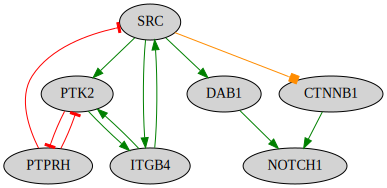
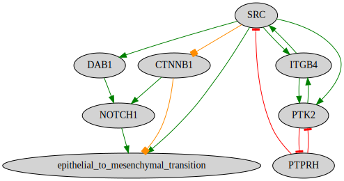

Connect to downstream Gene Ontology terms.
This notebook showcases the functionality of Omniflow that connects the existing nodes of a network to a phenotype of interest.
[1]:
%%time
from neko.core.network import Network
from neko._visual.visualize_network import NetworkVisualizer
from neko._inputs.resources import Resources
from neko._annotations.gene_ontology import Ontology
import omnipath as op
CPU times: user 15.4 s, sys: 532 ms, total: 16 s
Wall time: 17.1 s
1. Build network
Please see the Network building tutorial for detailed explanations of each step.
[2]:
genes = ["SRC", "NOTCH1", "FAK"]
[3]:
new_net1 = Network(genes)
[4]:
%%time
new_net1.connect_nodes(only_signed=True, consensus_only=True)
CPU times: user 177 ms, sys: 4.06 ms, total: 181 ms
Wall time: 179 ms
[5]:
%%time
new_net1.complete_connection(maxlen=6, k_mean="tight", only_signed=True, connect_node_when_first_introduced=True, consensus=True)
CPU times: user 14.3 s, sys: 4.09 ms, total: 14.3 s
Wall time: 14.3 s
[6]:
#Visualize network
visualizer1 = NetworkVisualizer(new_net1, color_by='effect')
visualizer1.render()

2. Connect to Gene Ontology (GO) term
Connect the nodes of the Network with markers of a certain phenotype, from Gene Ontology.
The connect_genes_to_phenotype function will look for interactions between the nodes of the network and genes annotated with a GO term of interest. The argument compress replaces the individual phenotype-specific genes into one phenotype node.
Note
We suggest to the users to choose gene ontology terms lower in the hierarcy (e.g., execution phase of apoptosis versus apoptosis) to avoid the inclusion of too many genes.
[10]:
%%time
new_net1.connect_genes_to_phenotype(id_accession="GO:0001837", phenotype="epithelial to mesenchymal transition", only_signed=True, compress=True, maxlen=1)
Start requesting genes from Gene Ontology
Fetching from: https://golr-aux.geneontology.io/solr/select?defType=edismax&qt=standard&indent=on&wt=csv&rows=100000&start=0&fl=bioentity_label&facet=true&facet.mincount=1&facet.sort=count&json.nl=arrarr&facet.limit=25&hl=true&hl.simple.pre=%3Cem%20class=%22hilite%22%3E&hl.snippets=1000&csv.encapsulator=&csv.separator=%09&csv.header=false&csv.mv.separator=%7C&fq=document_category:%22annotation%22&fq=isa_partof_closure:%22GO:0001837%22&fq=taxon_subset_closure_label:%22Homo%20sapiens%22&fq=type:%22protein%22&fq=annotation_class_label:%22epithelial%20to%20mesenchymal%20transition%22&facet.field=aspect&facet.field=taxon_subset_closure_label&facet.field=type&facet.field=evidence_subset_closure_label&facet.field=regulates_closure_label&facet.field=isa_partof_closure_label&facet.field=annotation_class_label&facet.field=qualifier&facet.field=annotation_extension_class_closure_label&facet.field=assigned_by&facet.field=panther_family_label&q=*:*
Done
Starting connecting network's nodes to: ['SLC39A10', 'ENG', 'TGFB1', 'HGF', 'SNAI2', 'DDX17', 'CUL7', 'BMP2', 'BMP7', 'NOG', 'SLC39A6', 'TGFBR3', 'ROCK1', 'PPP3R1', 'TRIM28', 'SP6', 'LEF1', 'FGFR1', 'WNT5A', 'FGFR2', 'HNRNPAB', 'TGFB2', 'CTNNB1', 'WNT4', 'EPB41L5', 'TGFBR3L', 'FOXF2', 'FLNA', 'LIMS1', 'SMAD4', 'RBPJ', 'FAM83D', 'DDX5', 'AKNA', 'TGFBR1', 'LOXL2', 'AMELX', 'WNT11', 'GSK3B', 'LOXL3', 'SOX9', 'NOTCH4', 'S100A4', 'DLG5', 'DACT3', 'NOTCH1', 'HIF1A', 'SNAI1', 'ROCK2', 'RFLNB', 'TGFBR2', 'HMGA2', 'IGF1', 'NCAM1']
['P12931', 'P46531', 'Q05397', 'O75553', 'P35222', 'Q9HD43', 'P16144']
['Q13433', 'P56705', 'Q06330', 'P13591', 'P41221', 'H3BV60', 'P14210', 'P48059', 'Q8TDM6', 'Q92841', 'Q9Y4K0', 'Q9UJU2', 'Q3SY56', 'Q9HCM4', 'P21802', 'P17844', 'P49841', 'P61812', 'Q13485', 'Q96B18', 'P48436', 'Q9ULF5', 'P21333', 'P01137', 'P36897', 'P26447', 'O96014', 'O43623', 'Q99729', 'P58215', 'P18075', 'Q13464', 'P11362', 'Q12947', 'Q99466', 'P37173', 'P17813', 'P12643', 'Q9H4H8', 'O95863', 'Q7Z591', 'P05019', 'Q14999', 'Q8N5W9', 'O75116', 'Q13253', 'P52926', 'Q99217', 'Q03167', 'P63098', 'Q13263', 'Q16665']
Unexpected exception formatting exception. Falling back to standard exception
Traceback (most recent call last):
File "/home/eirini/.cache/pypoetry/virtualenvs/neko-vv6LBICe-py3.10/lib/python3.10/site-packages/IPython/core/magics/execution.py", line 1332, in time
out = eval(code, glob, local_ns)
File "<timed eval>", line 1, in <module>
File "/home/eirini/Documents/Git/omniflow_project/neko/core/network.py", line 1053, in connect_genes_to_phenotype
self.edges = self.edges.append(new_edge, ignore_index=True)
File "/home/eirini/.cache/pypoetry/virtualenvs/neko-vv6LBICe-py3.10/lib/python3.10/site-packages/pandas/core/generic.py", line 6299, in __getattr__
return object.__getattribute__(self, name)
AttributeError: 'DataFrame' object has no attribute 'append'. Did you mean: '_append'?
During handling of the above exception, another exception occurred:
Traceback (most recent call last):
File "/home/eirini/.cache/pypoetry/virtualenvs/neko-vv6LBICe-py3.10/lib/python3.10/site-packages/IPython/core/interactiveshell.py", line 2144, in showtraceback
stb = self.InteractiveTB.structured_traceback(
File "/home/eirini/.cache/pypoetry/virtualenvs/neko-vv6LBICe-py3.10/lib/python3.10/site-packages/IPython/core/ultratb.py", line 1435, in structured_traceback
return FormattedTB.structured_traceback(
File "/home/eirini/.cache/pypoetry/virtualenvs/neko-vv6LBICe-py3.10/lib/python3.10/site-packages/IPython/core/ultratb.py", line 1326, in structured_traceback
return VerboseTB.structured_traceback(
File "/home/eirini/.cache/pypoetry/virtualenvs/neko-vv6LBICe-py3.10/lib/python3.10/site-packages/IPython/core/ultratb.py", line 1173, in structured_traceback
formatted_exception = self.format_exception_as_a_whole(etype, evalue, etb, number_of_lines_of_context,
File "/home/eirini/.cache/pypoetry/virtualenvs/neko-vv6LBICe-py3.10/lib/python3.10/site-packages/IPython/core/ultratb.py", line 1063, in format_exception_as_a_whole
self.get_records(etb, number_of_lines_of_context, tb_offset) if etb else []
File "/home/eirini/.cache/pypoetry/virtualenvs/neko-vv6LBICe-py3.10/lib/python3.10/site-packages/IPython/core/ultratb.py", line 1155, in get_records
FrameInfo(
File "/home/eirini/.cache/pypoetry/virtualenvs/neko-vv6LBICe-py3.10/lib/python3.10/site-packages/IPython/core/ultratb.py", line 780, in __init__
ix = inspect.getsourcelines(frame)
File "/usr/lib/python3.10/inspect.py", line 1121, in getsourcelines
lines, lnum = findsource(object)
File "/usr/lib/python3.10/inspect.py", line 958, in findsource
raise OSError('could not get source code')
OSError: could not get source code
[11]:
#Visualize network
visualizer1 = NetworkVisualizer(new_net1, color_by='effect')
visualizer1.render()

[12]:
new_net1.edges
[12]:
| source | target | Type | Effect | References | |
|---|---|---|---|---|---|
| 0 | O75553 | P46531 | stimulation | SIGNOR:22394407;SignaLink3:18593473;SignaLink3... | |
| 1 | P12931 | O75553 | stimulation | HPRD-phos:10959835;HPRD-phos:11279201;HPRD:109... | |
| 2 | P12931 | P16144 | stimulation | Adhesome:10592173 | |
| 3 | P12931 | P35222 | bimodal | ACSN:10593980;ACSN:12123611;ACSN:15782139;ACSN... | |
| 4 | P12931 | Q05397 | stimulation | Adhesome:10085298;Adhesome:10592173;Adhesome:1... | |
| 5 | P12931 | epithelial_to_mesenchymal_transition | stimulation | ProtMapper:16859511;ProtMapper:17440088;ProtMa... | |
| 6 | P16144 | P12931 | stimulation | Adhesome:10592173 | |
| 7 | P16144 | Q05397 | stimulation | Adhesome:10592173;Adhesome:12110680;CancerCell... | |
| 8 | P35222 | P46531 | stimulation | SIGNOR:19000719 | |
| 9 | P35222 | epithelial_to_mesenchymal_transition | bimodal | BioGRID:11751639;BioGRID:12748295;BioGRID:1572... | |
| 10 | P46531 | epithelial_to_mesenchymal_transition | stimulation | BioGRID:12644465;BioGRID:22143792;BioGRID:3096... | |
| 11 | Q05397 | P16144 | stimulation | Adhesome:10592173;Adhesome:12110680;CancerCell... | |
| 12 | Q05397 | Q9HD43 | inhibition | Adhesome:11278335;HPRD:11278335 | |
| 13 | Q9HD43 | P12931 | inhibition | Adhesome:15850787;DEPOD:15850787 | |
| 14 | Q9HD43 | Q05397 | inhibition | Adhesome:11278335;HPRD:11278335 |
[ ]: